对微信提供的 Motion Reel 参考片（31.9 秒）按 2 帧/秒全量抽帧（64 帧）逐格分析，关键节点以高清截图 + 文字描述固化，作为官网动态版设计语言的原始依据。
整部片子就是这 10 种手法的排列组合。全片有两条贯穿线：①四角等宽字体 HUD（时间码 / 章节号 / 录制点）从头跑到尾；②整屏色块切换（黑→橙→蓝→灰→黑→酸绿→米白→黑→酸绿→黑）承担章节节奏。
11 个场景按时间顺序排列。每个场景：高清截图 + 「这一帧里什么在动、怎么动」。
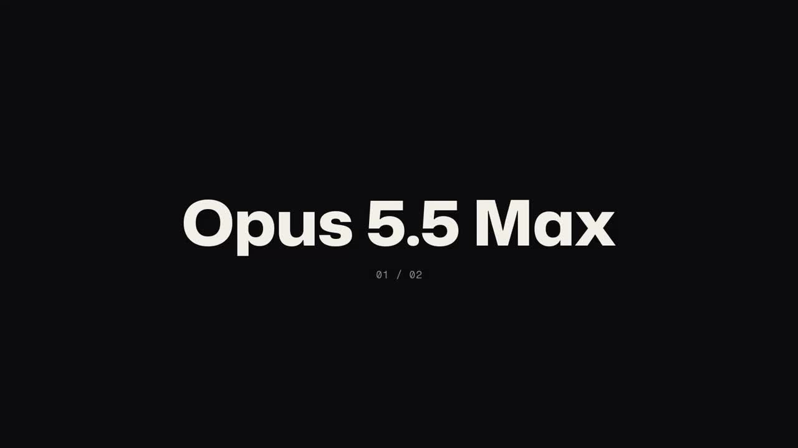
近黑底上一行白色超粗标题「Opus 5.5 Max」，下方小号等宽字标注页码。画面四角是等宽字体 HUD（左上项目名、右上参数、底部时间码）。
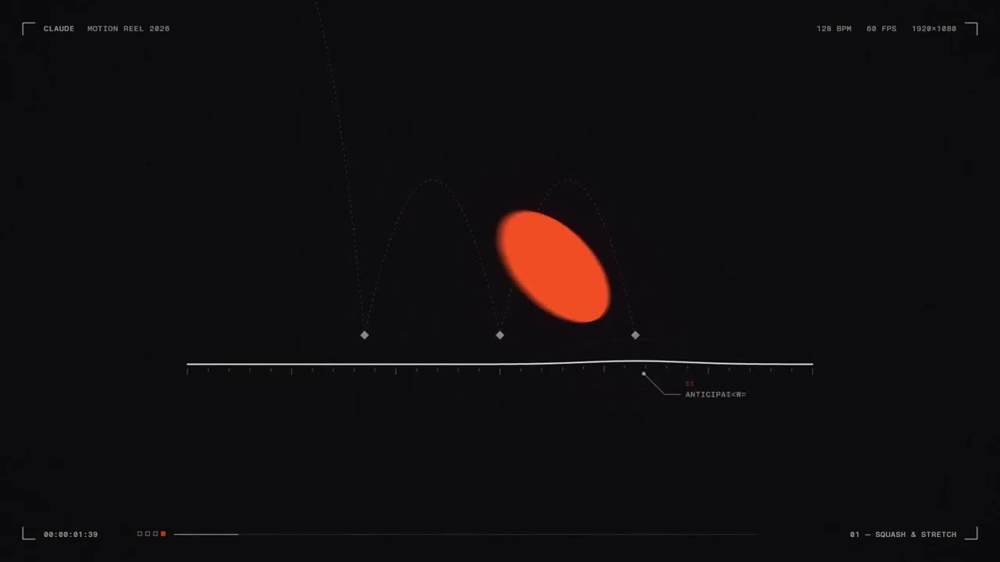
黑底中部出现一条白色细横线（地平线），一颗橙红小球沿线漂浮移动；下一瞬小球急速放大成整屏橙红色块（转场），随后橙底黑字「EVERY」压出；紧接着切黑底橙字「FRAME」，文字四角出现蓝色选中控制点和小工具条。
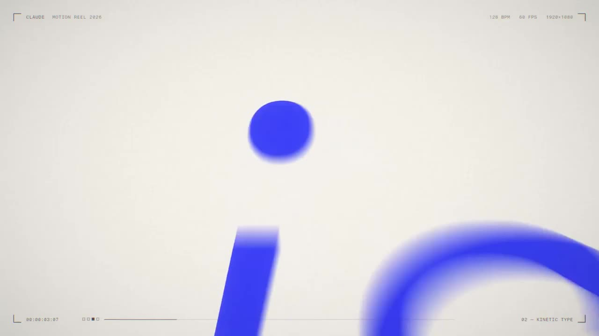
蓝底上的白色字形发生 RGB 色散分离（红/青错位重影）；切灰底一个细线圆环 loading；再切纯黑底上的白色圆点矩阵——矩阵图案逐帧变化：全点阵 → 中心泛蓝 → 星形/十字图案 → 混入红蓝彩色方块。
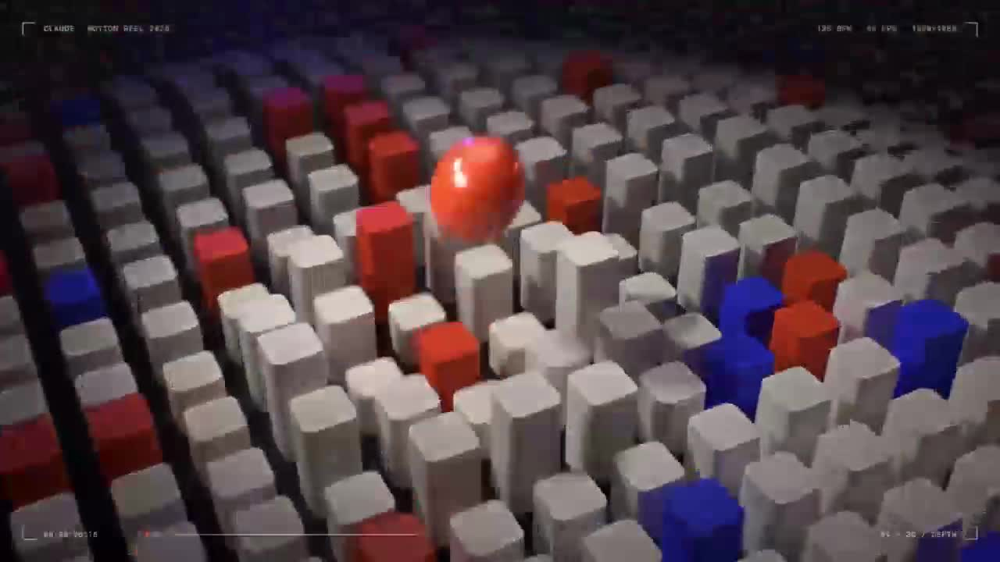
白色方块组成透视地形海，随机方块升红、升蓝；一颗红色大球悬浮在方块海上方。
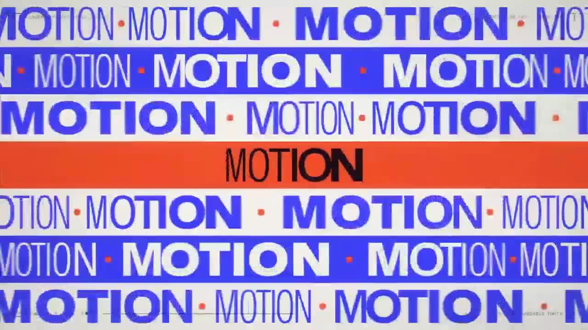
整屏被"文字墙"填满：多行蓝底白字「MOTION」斜向平铺无限滚动，行与行方向相反；中间横贯一条橙红色条，条内黑字「MOTION」反向滚动；高速滚动时全部文字带强烈动态模糊拖影。
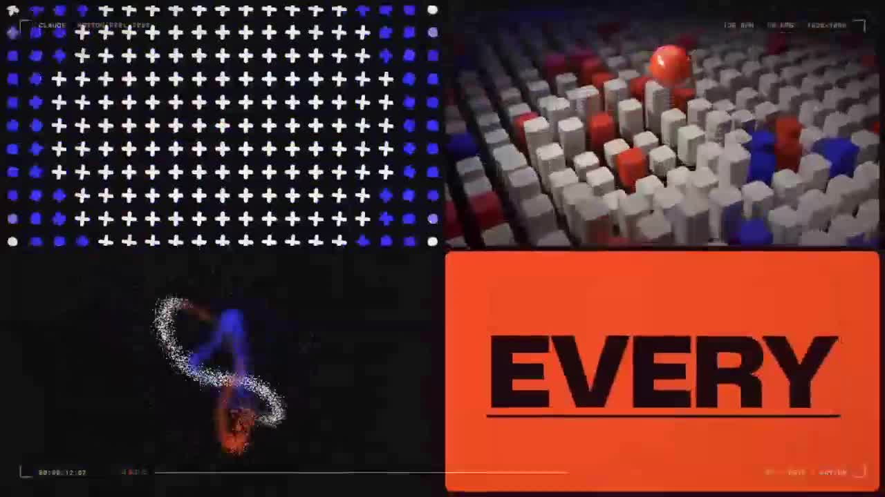
纯黑底上，数万颗白色微粒聚成一个致密球体（左）；随即球体被"拉开"，粒子流变成红蓝双色交织的螺旋曲线（中），最后散开成一道弧形尾巴（右）。
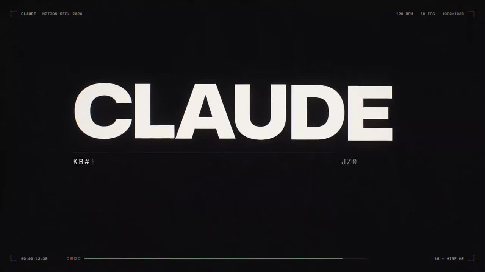
过渡帧：灰底小球拖着 MOTION 文字残影；随后黑底上拼贴出「FRAME / is / CO$」三张卡片（橙字白卡、纯白卡、蓝底白字卡）+ 两侧点阵与方块海小窗；方块海窗口发生彩色位移撕裂 glitch。接着黑底逐字打出「CLA…」→「CLAUDE」，右下角等宽小字逐一出现（MOTION DESIGNER · SANFRAN · 2026），句点变橙色，最后一行小字滑入：「every frame of this reel is code」。
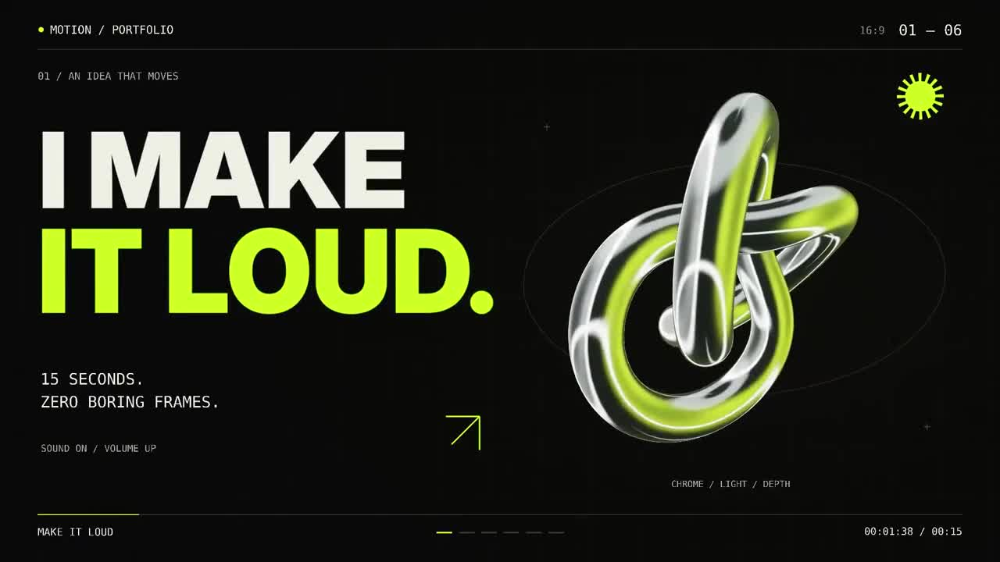
黑底章节卡「GPT 6 Astra Max」再次定场后，进入三个连续的"网页 Hero"式场景：
①「I MAKE IT LOUD.」——白字+酸绿强调词，右侧一颗绿银渐变金属扭结环缓慢旋转，左下小字+右上箭头按钮、四角 HUD 齐全；
② 整屏切酸绿底「TYPE IN MOTION.」黑字，右侧一条黑白条纹莫比乌斯带旋转，带子表面还有黑色文字在流动；
③ 切回黑底「FORM. WITHOUT LIMITS.」（WITHOUT LIMITS 酸绿），右侧绿银扭管做蠕动式变形旋转。
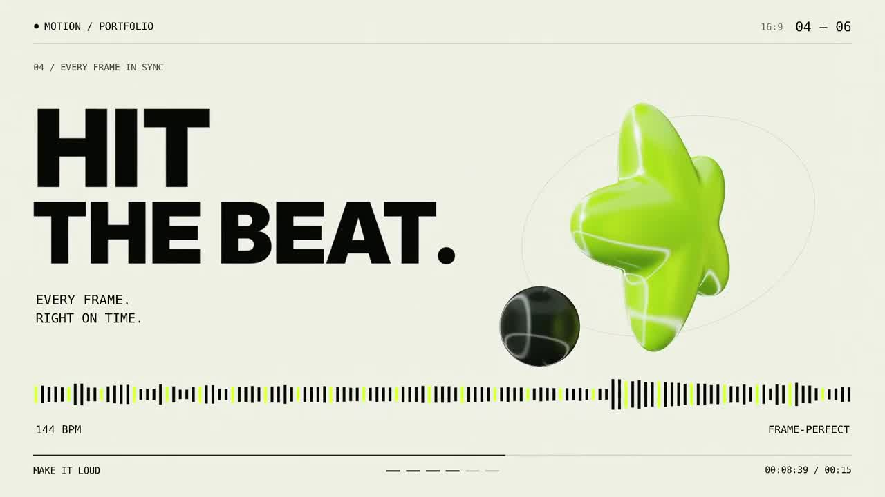
切米白底：「HIT THE BEAT.」黑粗字，左下小字「EVERY FRAME / EXACTLY ON TIME」，右侧一颗绿色果冻质感星形（高光透明），旁边一颗黑色小球；页面底部一条完整的音频波形条。
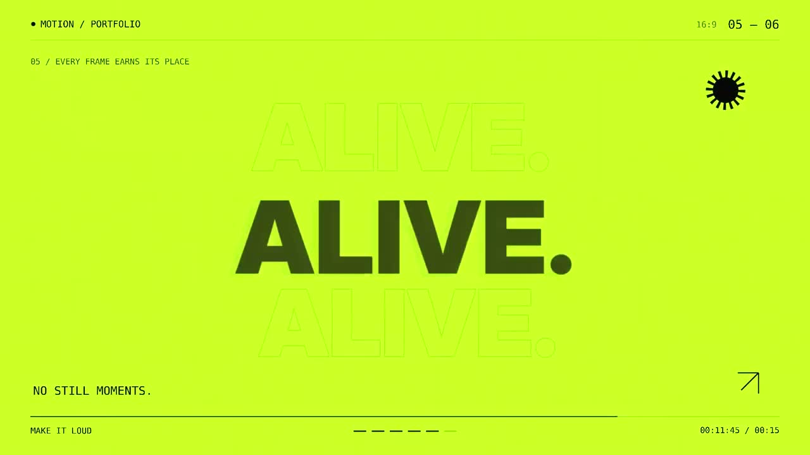
三个单词三次整屏切换：黑底「BOLD.」→ 米白底「PRECISE.」→ 酸绿底「ALIVE.」。每个单词背后都叠同词描边空心幽灵字，角落有一颗小星芒图标旋转。
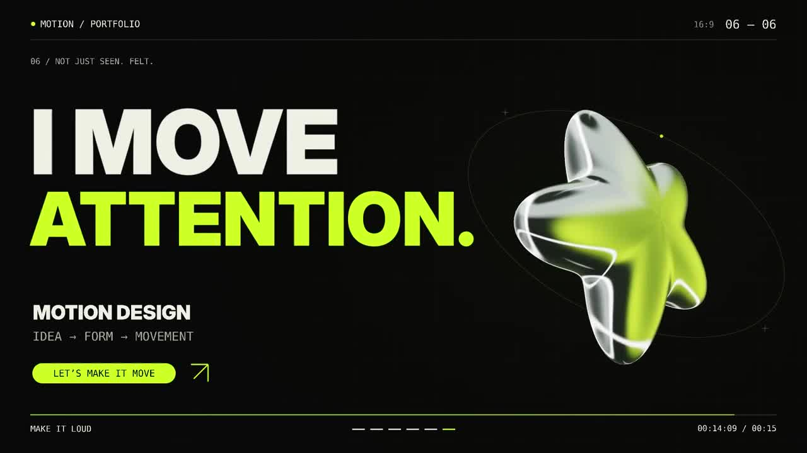
回到黑底终幕：「I MOVE ATTENTION.」（ATTENTION 酸绿），右侧绿色果冻星形大号回归，左下 MOTION DESIGN 徽章 + 「LET'S MAKE IT MOVE」胶囊按钮 + 箭头，四角 HUD 收束全片。
这 10 条手法里，网站 V3 已实现 6 条；未实现的 4 条是后续版本（V4+）最有价值的升级方向。
| 参考片手法 | 官网 V3 对应实现 | 状态 | 后续可借鉴 |
|---|---|---|---|
| ① 整屏色块切换 | 板块底色节奏：米白→酸绿→黑→酸绿→米白→黑→酸绿 | ✔ 已实现 | 可加"切换瞬间的硬切抖动" |
| ② 打字机 + 强调句点 | 首屏打字机副标题（O 链 / H1） | ✔ 已实现 | 标题句点用酸绿强调 |
| ③ 跑马灯文字墙 | 酸绿带 M1 + 墨色带 M2 + 背景双层描边跑马灯（H4） | ✔ 已实现 | 可加"动态模糊量随速度变化" |
| ⑧ HUD 取景框系统 | 底部 HUD 胶囊（时间码+进度条+章节号 G1） | ✔ 已实现 | 可补四角取景框标记 |
| ⑩ 幽灵描边字叠层 | 每板块巨型幽灵字（R3） | ✔ 已实现 | 快闪词切换时可加错位对齐 |
| ⑥ 图案矩阵动画 | 半调点阵画布呼吸波+指针涟漪（H5） | ✔ 已实现 | 可加"图案逐格变形（星形/十字）" |
| ④ 粒子聚散变形 | — | ✘ 未实现 | Canvas 粒子流变：球→螺旋→弧，适合做第二个视觉高潮 |
| ⑤ 3D 金属/果冻形体 | 近似替代：CSS 光泽球体+光环（H6/H7） | ◐ 近似 | 真 3D 形体（Three.js 扭结环/果冻星形）做 Hero 主视觉 |
| ⑦ Glitch 故障 | — | ✘ 未实现 | 标题 RGB 分离 + 位移撕裂 1–2 帧，转场瞬间用 |
| ⑨ 节拍可视化 | — | ✘ 未实现 | 数据区底部加波形条跳动，配"数字卡节拍"计数 |